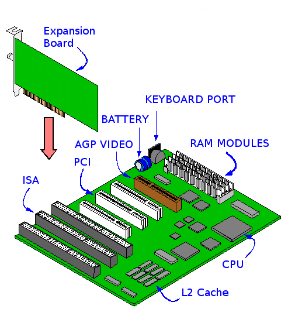
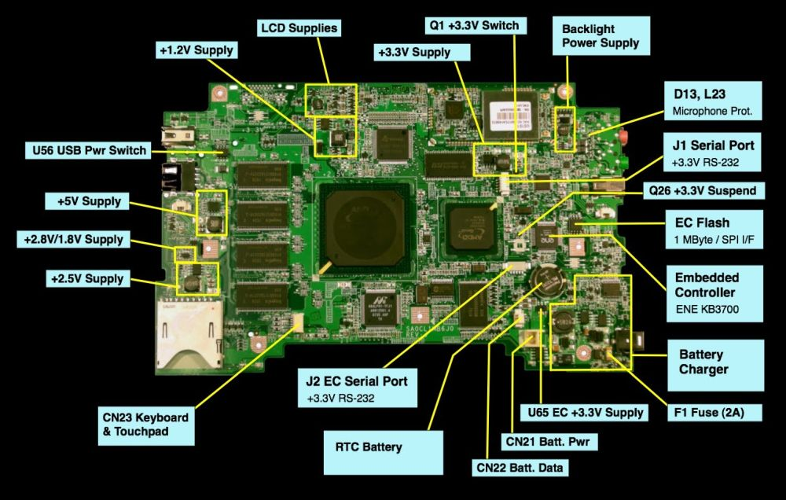

Motherboards
The main printed circuit board (PCB) in an electronic device, sometimes called a "mainboard". It contains sockets that accept additional circuit boards called expansion cards. In a personal computer, the motherboard contains the bus, CPU, any co-processors, memory sockets, keyboard controller and supporting chips sometimes called "chipset". Many chipset features have been integrated into the CPU over the years.
Chips that control the video display, disk drives, and external ports, may or may not be present on the motherboard. Sometimes they are controlled inside the CPU and some plug into expansion slots. Cards that control peripheral buses are called Host Bus Adapters (HBA). A common host bus adapter is a SCSI or SAS HBA.
The IBM AT (Advanced Technology) motherboard that dominated PCs in the 1970s through the 90s, is quickly recognized by the power socket, used to connect two 6 pin power supply connections. Get the power plugged in backwards and poof, dead system! Old guys remembered "black to black" putting the black wires together in the center of the power socket to avoid the expensive damage so easily done.
The main feature or new idea of this PCB is it allows for 3rd party hardware to expand the system features. It was a very BIG industry changing idea when it came out.

ATX motherboards started in 90’s and are still available. The ATX connector on the motherboard consists of a much safer single ATX power supply connector, notched to prevent plugging in the wrong way. These boards are used for Pentium 2, 3 or 4 processors, useful past the year 2000.
BTX (for Balanced Technology eXtended) is a form factor for motherboards, originally intended to be the replacement for the aging ATX motherboard form factor in late 2004 and early 2005, but didn't sell well. Around this time desktop sales dramatically dropped in favor of laptops, smartphones, and tiny Next Unit of Computing (NUC) hand sized desktops.
Below is a laptop motherboard. Laptops motherboards are smaller, have more built-in device circuits with few, if any, expansion slots. They are mostly custom made to fit the chassis model or family of models they are released with.
